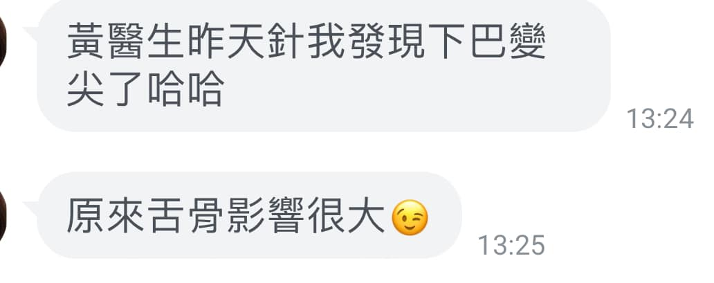

上週六幫一位喉嚨卡卡的個案處理了下巴的二腹肌，當場就改善了喉嚨卡卡的不適感，今天…
上週六幫一位喉嚨卡卡的個案處理了下巴的二腹肌，當場就改善了喉嚨卡卡的不適感，今天獲得回饋，原來還可以瘦下巴🥰🥰🥰
昨晚肌筋膜脈學中醫應用的讀書會，也是恰巧在討論舌骨上下肌群與睡眠呼吸的機制！
馬上從學理與臨床上獲得相呼應證，還額外獲得瘦下巴的附加效果，真是一箭三鵰，水啦😜😜😜

中醫徒手・內針傷整合・精準全人醫療
上週六幫一位喉嚨卡卡的個案處理了下巴的二腹肌，當場就改善了喉嚨卡卡的不適感，今天獲得回饋，原來還可以瘦下巴🥰🥰🥰
昨晚肌筋膜脈學中醫應用的讀書會，也是恰巧在討論舌骨上下肌群與睡眠呼吸的機制！
馬上從學理與臨床上獲得相呼應證，還額外獲得瘦下巴的附加效果，真是一箭三鵰，水啦😜😜😜

有類似的困擾想諮詢？
📅 門診時間・預約掛號